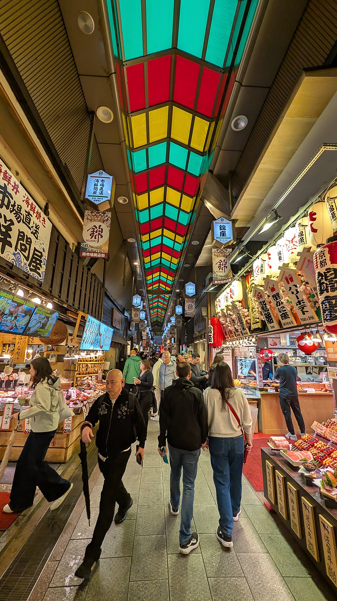
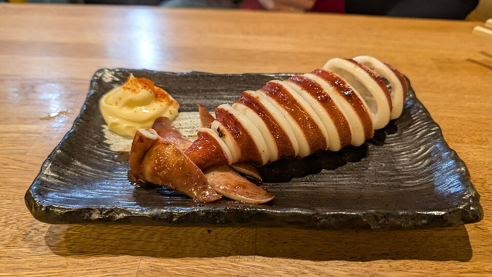

Nishiki Market
Центр · ~5 мин метро до Shijo + 5 мин пешком, или 20-25 мин пешком от отеля



«Кухня Kyoto» - крытая торговая улица длиной 400 м, больше 100 лавок с историей до 400 лет: маринады tsukemono, тофу юба, сушёная рыба, чай, сладости. Многие прилавки дают пробовать на ходу.
Большинство лавок работают 9/10:00-18:00, часть закрыта по средам или воскресеньям - у каждой лавки своё расписание.
Рядом


Фото: Wikimedia Commons (лицензии под каждым фото). Часы и цены проверены 20.10.2026 по путеводителям и официальным сайтам - перепроверь перед визитом, сезонно меняются. ← ко всем местам